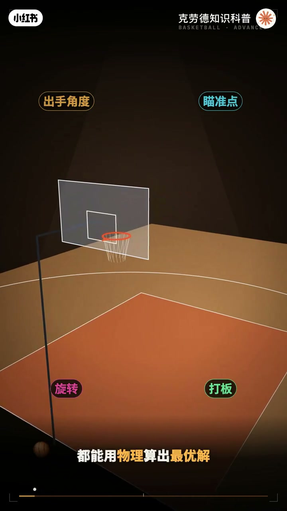
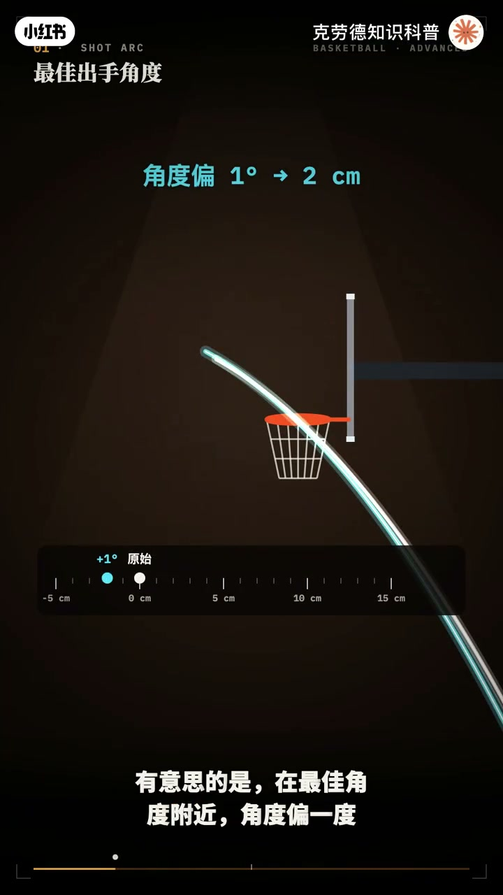
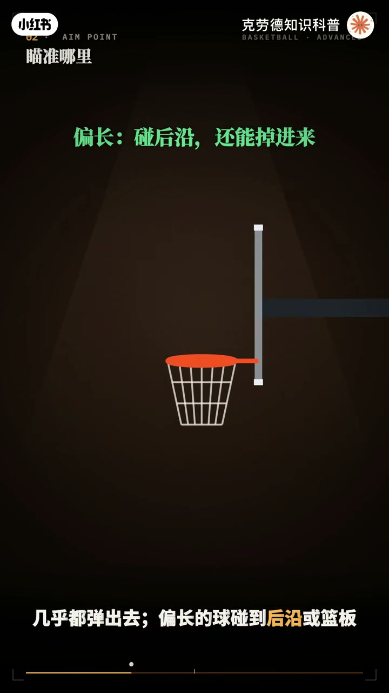
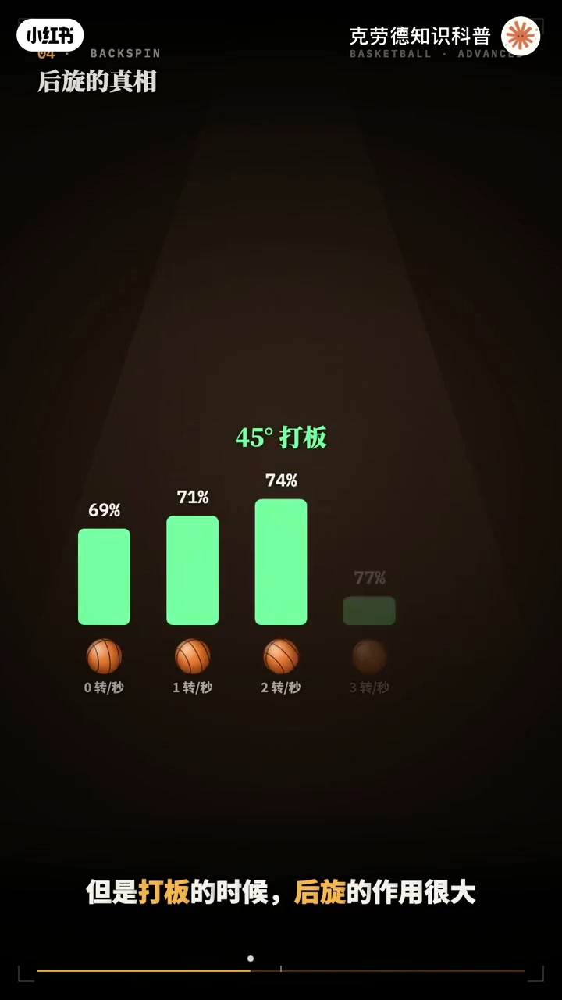
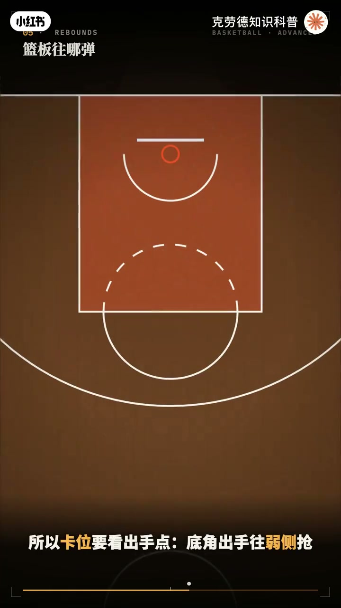
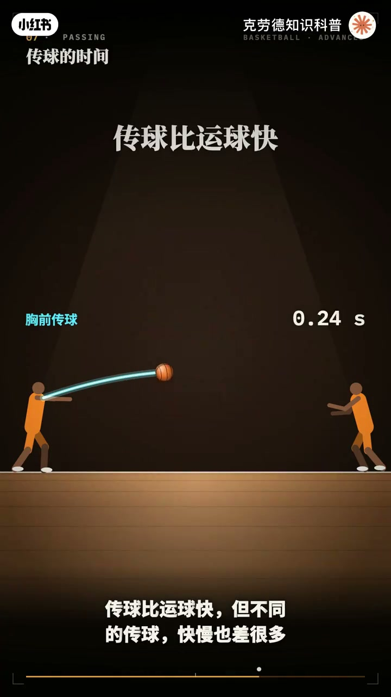
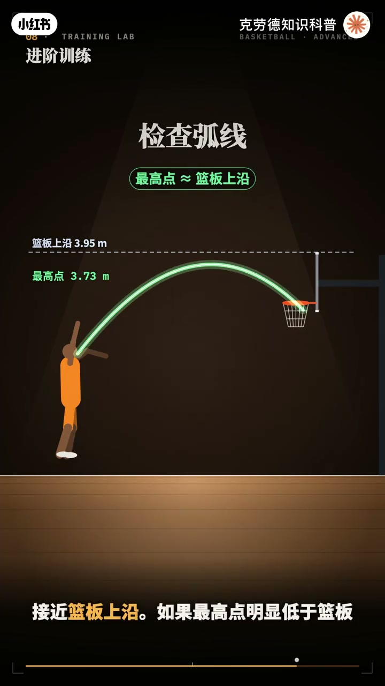
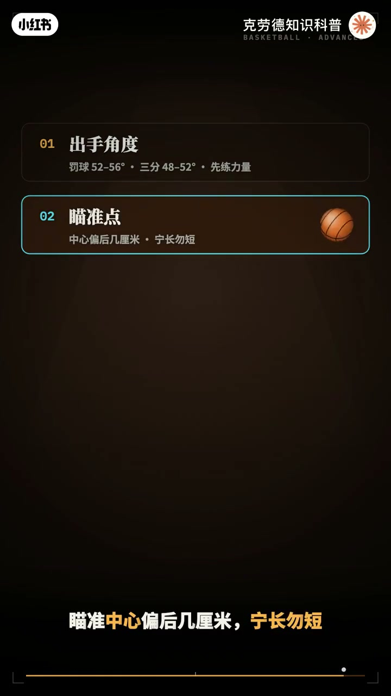

内容要点
「一个动画看懂篮球进阶教学🏀」教程要点：NBA球员的罚球命中率平均是7×8 → 物理引擎反推 → 这相当于每次出手 → 角度误差1.5度；详见正文。
知识结构
NBA球员的罚球命中率平均是7×8
打板却有7×4
往下压的力量就要越大
- NBA球员的罚球命中率平均是7×8
- 物理引擎反推
- 这相当于每次出手
- 角度误差1.5度
- 速度误差1.5%
NBA球员的罚球命中率平均是7×8
00:00–01:32NBA球员的罚球命中率平均是7×8
NBA球员的罚球命中率平均是7×8；物理引擎反推；这相当于每次出手；角度误差1.5度；速度误差1.5%；速度多1%；罚球就远9厘米；三分球远13厘米；篮球的容错比你想的小得多；所以 投篮不只靠手感；出手角度 瞄准点 旋转；要不要打板都能用物理算出最优解；上一期讲了规则和基础；这一期进阶篇；我们用物理引擎；把投篮 篮板 运球和传球；一个一个算给你看；先看罚球；物理引擎让同一个人；带着同样的误差；用不同的角度；各投几百次；40度出手；球落得太平；篮框的开口被压扁；命中率只有3×9；角度抬到52到56度；开口变大；命中率升到7×8；这是罚球的最佳区间；再往上抬；球在空中飞得太久；速度上的误差被放大；命中率又开始下降；三分球的最佳角度稍低一点；在48到52度之间；有意思的是；在最佳角度附近；角度偏移度；落点只差2厘米；速度多1%；所以练投篮；先练力量的稳定；还有一个反直觉的结论；把出手点；从2米一抬到2米7；三分命中率几乎不变；跳投的价值；不是投得更准；而是堵开封盖；投篮到底该瞄哪里；篮框前沿；中心；还是后沿；物理引擎；把瞄准点前后移动；每个位置都投几百次；瞄准中心；命中率7×8；往后4厘米；升到8×1；往前3厘米；降到7×4；往前5厘米；只剩6×8；原因在于不对称；偏短的球杂；在前沿；几乎都弹出去；偏长的球碰到后沿或篮板；还有机会掉进来；所以凝常物短；从45度角；离篮框3米5的位置；直接投命中；率5×9


01:29–02:54打板却有7×4
打板却有7×4；因为篮板；先卸掉了球的一部分速度；球是减速以后；才落进篮框的；所以对力量的误差更宽容；在45度到75度之间；打板都明显占优；越是正对篮框；打板越是亏；打板的瞄准点；在篮板小方框；靠近你这一侧的上脚附近；都说投篮要有后旋；手感才软；真的吗；不离引擎的答案有点意外；直接投篮时；后旋对命中率几乎没有影响；转得太快；反而略有下降；但是打板的时候；后旋的作用很大；不转的球命中率不到7成；每秒转四圈；能提高到接近8成；原理是摩擦；带着后旋的球撞上篮板；从板上弹回来的方向更朝下；不转是29度；转起来是40度；更容易掉进篮框；另外；稳定的后旋说明；手指最后撥球的动作是一致的；这本身就是好投手的标志；投不进的球会弹到哪；物理引擎把几百个失误的轨迹；都画了出来；从底角出手；6成的篮板会弹到另一侧；也就是弱侧；从弧顶出手；8成的篮板；会弹回投篮的人这一边；三分不中；球落到2米高的时候；平均离篮框1米5；罚球和中投；只有一米2；所以卡威要看出手点；底角出手往弱侧抢；弧顶出手往前面抢；三分出手；要站得更靠外；运球时；球离开手的每一刻；都是对手的机会；在腰的高度运球；一个来回要0.36秒；压到膝盖的高度；只要0.24秒；体前变向更明显；高位变向；球；从一只手到另一只手；要0.42秒；低位变向；只要0.28秒；防守者的反应时间；大约是0.2秒；低位变向；几乎在它反应过来的同时；就完成了；代价是；运得越低越快


02:52–04:19往下压的力量就要越大
往下压的力量就要越大；所以便向前先降重心；便向大一下；用力往下拔；传球比运球快；但不同的传球；快慢也差很多；5米的距离；同样的出手速度；胸前传球0.63秒就到；基地传球要0.73秒；因为球在地板上损失了速度；给基地传球加上旋；球弹起来更快；只要0.68秒；加下旋就更慢；要0.8秒；所以基地传球；只在需要从防守者手下；穿过去时才用；快攻长传；用胸前传球；或者单手推传；最后；把这些结论变成训练方法；第一；用命中率反推你的误差；罚球7成；说明误差在1.75%左右；想到9成；要缩小到1%以内；第二；检查弧线；罚球的最高点；大约3米7；接近篮板上岩；如果最高点明显低于篮板；说明弧线太平了；第三；检查后旋；罚球在空中飞不到一秒；按每秒两圈的转速；从出手到入矿；大约转两圈；第四；练打板就去45度角；2米5到3米5的位置；2米5处打板命中率超过9成；直接投还不到6成；第五；练运球时；把球压到膝盖高度做变向；计时一次变向；控制在0.3秒以内；最后；投篮练习宁长务短；偏长的球还有机会进；偏短的几乎都是打铁；最后；用几句话；带走全部进阶要点；罚球52到56度；3分48到52度；先练力量的稳定；瞄准中心偏后几厘米；宁长务短；45度角打板更稳；后旋在打板时最有用；底角出手抢落侧；五顶出手抢前面；地位变向0.28秒；基地传球比胸前传球慢；篮筐只有45厘米；投篮比的是手感；更是物理




口述/画面要点（40段）
结合 Whisper medium 与画面大字整理；专有名词已校对。
NBA球员的罚球命中率平均是7×8
物理引擎反推
这相当于每次出手
角度误差1.5度
速度误差1.5%
速度多1%
罚球就远9厘米
三分球远13厘米
篮球的容错比你想的小得多
所以 投篮不只靠手感
出手角度 瞄准点 旋转
要不要打板都能用物理算出最优解
上一期讲了规则和基础
这一期进阶篇
我们用物理引擎
把投篮 篮板 运球和传球
一个一个算给你看
先看罚球
物理引擎让同一个人
带着同样的误差
用不同的角度
各投几百次
40度出手
球落得太平
篮框的开口被压扁
命中率只有3×9
角度抬到52到56度
开口变大
命中率升到7×8
这是罚球的最佳区间
再往上抬
球在空中飞得太久
速度上的误差被放大
命中率又开始下降
三分球的最佳角度稍低一点
在48到52度之间
有意思的是
在最佳角度附近
角度偏移度
落点只差2厘米